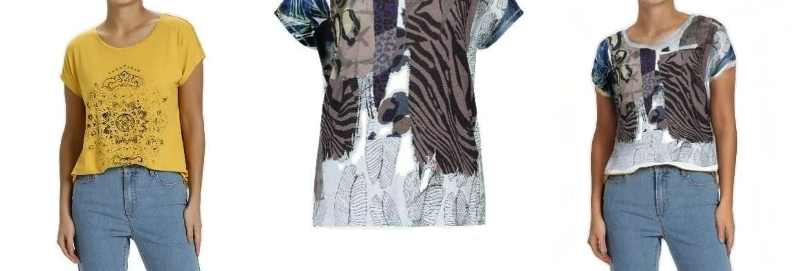
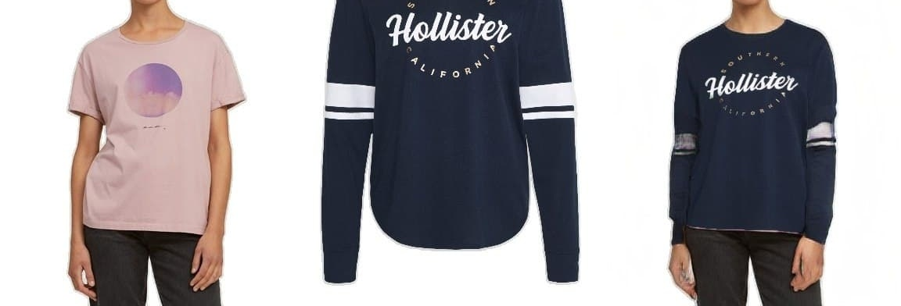
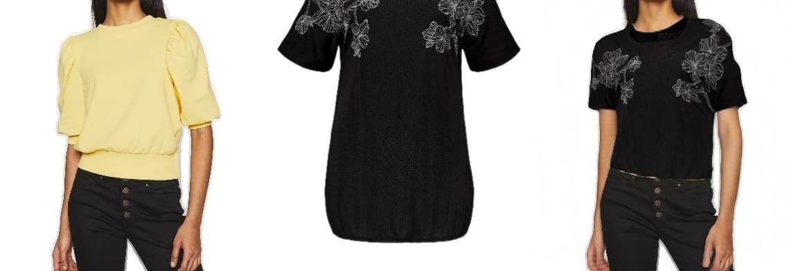
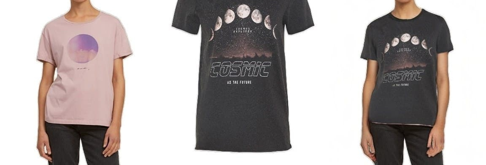

Virtual Try-On
- Tech Stack: Python, PyTorch, TensorFlow, OpenCV, FastAPI
- Github URL: I cannot share the code as I do not own it. Contact heravi.ahmad65@gmail.com for further information.
Virtual Try-On is a computer vision task in which the computer receives input from a person and a garment image. The goal is to replace the given garment on the person. Image generation may be complicated because the person can have any pose, shape, size, or clothing type (t-shirt, jacket, etc.).
To tackle this problem, we used some custom GANs, but there were some challenges:
- We needed the output to be high-resolution, but normal GANs cannot generate high-resolution images, and we had to solve this issue.
- We had to train with an inadequate amount of data, and we had to deal with it.
- We needed to speed up our training procedure as it took so long to train the models, and we tackled it with distributed training.
Here are some of the sample pictures:




